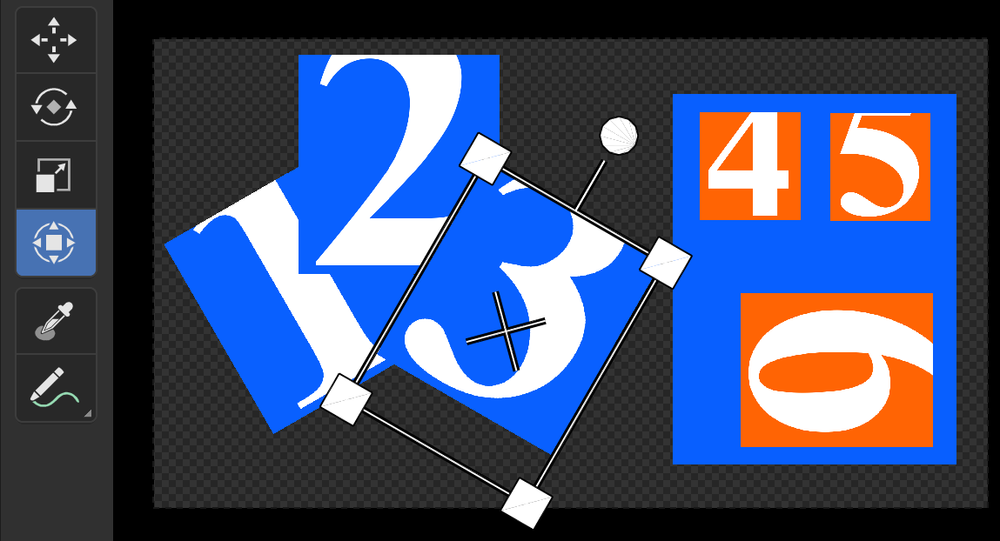
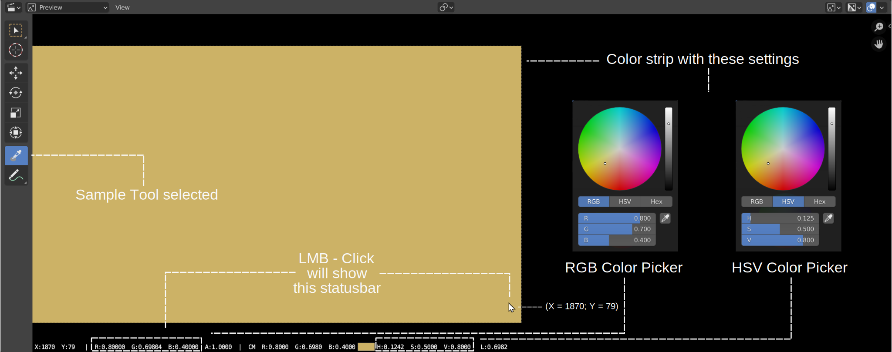

1.2.2. Toolbar¶
Toolbar は、[View] > [Toolbar] またはショートカット T でオンまたはオフを切り替えることができます。12 個のツールが含まれており、8 つのアイコンにまたがります (図1 の左側を参照)。
図1: Sequencer & Preview の Toolbar¶
図 1 は Video Sequence Editor の Sequencer と Preview ビューを示しています。これは、Toolbar (左側) と Sidebar (右側) に、Sequencer と Preview ビューの両方に適用されるエントリが含まれていることを意味します。たとえば、Bladeツール (左下) は通常、Sequencer ビューでのみ表示されます。Sidebarには、両方のビューのパネルも含まれています。
- Select tool W
-
選択ツールには 2 つのサブツールが含まれています。右下隅の小さな三角形で示されます。最後に選択したサブツールは、折りたたまれたときにアイコン上に表示されます。Preview でストリップを選択すると、Sequencer でもそのストリップが選択され、その逆も同様です。
Tweak サブツールは通常の選択ツールです。Shift 押すと、複数のストリップを選択できます。白い枠線の帯はアクティブ オブジェクトです。オレンジ色の枠線が付いているものは選択されています (ただしアクティブではありません)。Toolbar のツールは、選択したすべてのストリップに作用します。Sidebar のプロパティは、アクティブなオブジェクトにのみ影響します。例えば; ストリップ 1 と 3 が選択されています (ストリップ 3 がアクティブです)。回転ツールを使用すると、両方が回転します。ただし、Sidebar の回転フィールドを使用すると、ストリップ 3 のみが回転します。ただし、「回転」フィールドに値を入力した後に Alt Enter を押すと、両方のストリップにも影響します。
Sequencer ビューでは、すべてのストリップが異なるチャンネルの同じ位置にスタックされます。高いチャンネルのストリップが Preview ウィンドウの一番上に表示されます。したがって、ストリップ 1 はストリップ 2 とオーバーラップされます。これは、今度はストリップ 3 によってオーバーラップされます。
警告
ストリップは他のストリップの上に置くことができます (たとえば、図 1 のストリップ 6)。ただし、(Tweak サブツールを選択した状態で) ストリップ 6 の領域内をクリックすると、その下の青色のカラー ストリップが選択されます。もう一度クリックすると、ストリップ 6 が選択されます。つまり、重なっているストリップの共有ピクセルをクリックすると、シーケンサー ビューの最下位チャンネルのストリップが最初に選択され、次に上のチャンネルをクリックするとさらに選択されます。 1
選択ツールのショートカットは W です。マウスカーソルはPreviewウィンドウの上にある必要があります。連続して W 押すと、Tweak モードと Box Select モードが切り替わります。
[Select Box] サブツールが選択されている場合は、Preview ウィンドウで破線の矩形をドラッグできます。この矩形内に少なくとも 1 つのピクセルがあるすべてのストリップが選択されます。ただし、アクティブなストリップは変更されないことに注意してください。
警告
このサブツールを使用すると、ドラッグせずにクリックするだけで済みます。次に単一のストリップを選択します。ただし、アクティブなストリップは変更されます。
- Cursor tool
十字線が付いた白赤の円は 2Dカーソルと呼ばれます。このカーソルは、Preview ウィンドウ内の任意の場所 (レンダリング領域の外側の領域を含む) に配置できます。このカーソル自体は何も行いませんが、[Pivot Point] (Headerの [View] メニューの右側) と組み合わせて使用されます。
Pivot Point を2Dカーソルに設定すると、このポイントを基準にしてすべてのストリップが拡大縮小および回転されます。たとえば、ストリップ 2 は、2Dカーソルを中心にして一種の円パス内で回転します。
この 2D カーソルの表示をオフに切り替えるには、すべての[Overlay](Headerの右端のボタン) を無効にする必要があります。
- Move tool
移動ツールのショートカットは :kbd:`G`(Grab) です。ツールバーのMoveアイコンをクリックして、ストリップのドラッグを開始することもできます。メニューの下に次のメッセージが表示されます。Dx:0.0000 Dy: 0.0000 (0.0000) これは、ストリップが X 方向と Y 方向に移動した距離をピクセル単位で示します。括弧内の数値は、移動されたユークリッド距離です。
さまざまな方法で動きを制限できます。X 軸または Y 軸に沿って、より小さな増分またはより大きな増分で、あるいは特定のピクセル数で。詳細については、Montage > Move を参照してください。
[Show Gizmo] で [Active Tools] オプションが有効になっている場合 (図 1 を参照)。ギズモをドラッグしてストリップを移動することもできます。
移動操作の結果は、ストリップのプロパティの [位置 X] フィールドと [位置 Y] フィールドにも表示されます。もちろん、これらのフィールドを直接更新することもできます。
- Rotate tool
回転ツールのショートカットは R (Grab) です。ツールバーの回転アイコンをクリックして、ストリップを (円を描くように) ドラッグし始めることもできます。メニューの下に次のメッセージが表示されます: Rotation: 0.0 これは、ストリップが回転された角度を度単位で示します。正の数は時計回りの回転です。負の数は反時計回りの回転です。360° 以上回転でき、同時に複数のストリップを回転することもできます。デフォルトでは、回転は選択したストリップの中点を中心に行われます。ただし、ピボット ポイントは変更できます (図 1 を参照)。
マウス カーソルがピボット ポイントから離れるほど、回転の動きは遅くなります。したがって、非常に高速な回転を実現するには (ただし、細かい調整は困難です)、マウス カーソルをピボット ポイントのすぐ近くに置きます。
移動ツールと同様に、回転を制限できます。回転中に Shift を押すと回転の増分が減少します。これにより、結果を微調整できます (結果はストリップのプロパティの [Rotation] フィールドにも表示されます)。特定の回転角度を指定するには、 R の後に数値を入力します。たとえば、R-90 はストリップを反時計回りに 90° 回転させます。矢印キーを使用して、回転ハンドルを水平または垂直に移動することもできます。
[Show Gizmo] で [Active Tools] オプションが有効になっている場合 (図 1 を参照)。ギズモをドラッグしてストリップを回転することもできます。
- Scale tool
スケールツールのショートカットは S (Grab) です。ツールバーの「スケール」アイコンをクリックして、X 軸および/または (両方も可能) 他の軸に沿ってドラッグを開始することもできます。マウス カーソルがピボット ポイントから離れるほど、スケーリング単位が小さくなり、より正確に作業できるようになります。メニューの下に「Scale X: 1.0000 Y:1.0000」というメッセージが表示されます。これは、スケール ツールがローカル ビューを使用することを意味します。たとえば、ストリップはすでに 0.8 にスケールされています。2 番目のスケール操作は再びサイズ 1.0 として開始されます。したがって、2 回目に 0.5 にスケーリングすると、ストリップは絶対 (グローバル) 単位で元のサイズの 0.4 または 40% にスケーリングされます。1より大きい数値を指定すると、ストリップが拡大されます。1 より小さい数値を指定するとスケールダウンされます。
スケーリングはピボット ポイントを基準にして行われます。したがって、たとえば、Pivot Point が 2D カーソルに設定されている場合、ストリップを縮小すると、ストリップも 2D カーソルの方向に移動します。
スケーリング中に Shift を押すと、スケーリング単位が減少します。これにより、結果を微調整できます。また、矢印キーを使用してスケール ハンドルを水平または垂直に移動することもできます。
[Show Gizmo] で [Active Tools] オプションが有効になっている場合 (図 1 を参照)。ギズモをドラッグしてストリップを拡大縮小することもできます。
- Transform
変形ツールは、グラブ、回転、スケールの任意の組み合わせを同時にサポートします。図3 では、変形ツールが有効になっており、ストリップ 3 が選択されています。
図3: 変形ツール¶
ストリップの角にある 4 つの四角形を使用して、ストリップを拡大縮小できます。上部の円は回転用で、中央の十字はストリップの移動用です。
- Sample
Sampleツール (小さなスポイト アイコン付き) を使用して、ピクセルの色をサンプリングできます。Sampleツールを選択し (デフォルトで選択されている)、Preview 領域の任意の場所で LMB-Click しましょう。マウスカーソルの下のピクセルに関する情報がステータス バーに表示されます。
図4: Sample Tool in action¶
図4 のPreviewウィンドウには、RGB 値 (0.8, 0.7, 0.4) または同等の HSV 値 (0.142, 0.5, 0.8) を含む単純なカラーストリップが含まれています。これらの値はカラーピッカーで設定されます。これらは図4 にも示されています。プレビューの右下隅 (X = 1870 および Y = 79 の位置、図 2 を参照) には、次の情報を含むステータス バーが表示されます。
クリックされたピクセルの X 座標と Y 座標。左下隅が位置 (0,0) であり、プロジェクトの解像度が 1920 x 1080 に設定されていることを思い出してください
カラーピッカーからの赤、緑、青コンポーネントの値
ピクセルのアルファ値
Color Managed Values: 赤、緑、青、またはプレビューに表示される色
Color Managed Values に相当する 色相、彩度、明度、輝度
Color Managed Values は、Color Management panel からビュー変換機能を適用した結果です。Video Editing Workspace の場合、これはデフォルトで標準ビュー変換です。この変換関数は、表示デバイスの色の値を変更しません。
注釈
色が少し「色あせて」見える場合は、 View Transform function を確認してください。Video Editing Workspace 以外のワークスペースからプロジェクトを開始した場合、この機能はデフォルトで Filmic に設定されます。この変換機能は色を変更します (色を「色褪せ」させます)。幸いなことに、VSE は変換機能を標準にリセットしますが、これは最初に追加されたストリップがムービーまたは画像の場合に限ります。たとえばシーン ストリップを最初のストリップとして追加した場合、トランスフォーム機能は変更されません。
課題
カラー管理セクションへの参照、または RGB -> HSV 変換および/または変換関数に関する簡単な説明。
- Annotate
Annotate ツールを使用すると、Previewウィンドウ (つまり、プロジェクト Preview領域の外にも) にフリーハンドの注釈を描画できます。これは、チームでプロジェクトに取り組んでいる場合に (または後の自分に) 指示を与えるのに便利なツールです。これらの注釈は Blend ファイルとともに保存されます。
注釈とその設定は、サイドバーの Annotations panel に保存されます。すべての注釈を削除するには、[Unlink]ボタンをクリックするだけです。
Annotateツールの詳細については、ドキュメントの User Interface section セクションを参照してください。
{kind=link}
脚注
- 1
(訳注) Blender4.0では、最上位チャンネルのストリップが最初に選択され、次に下のチャンネルが選択されるようです。